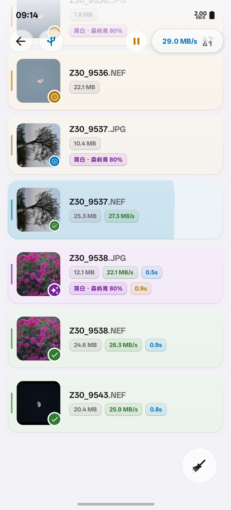
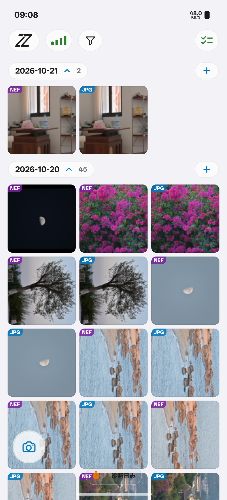
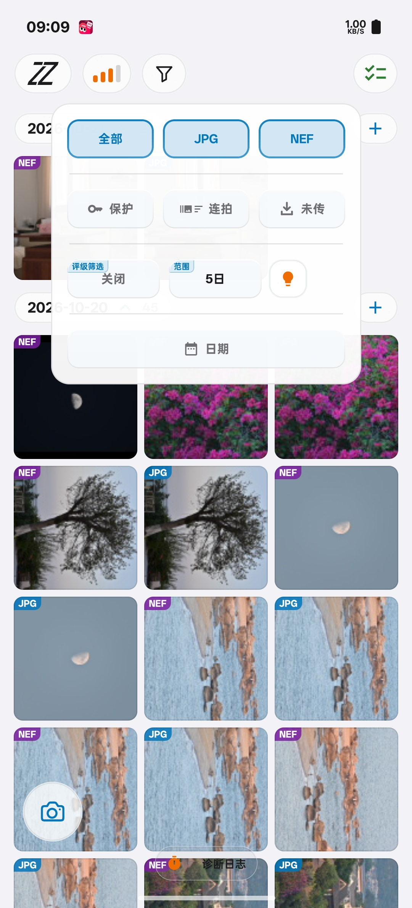
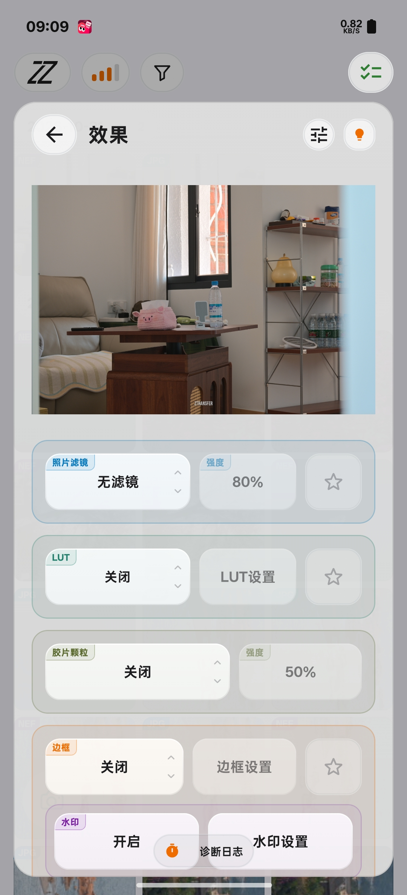
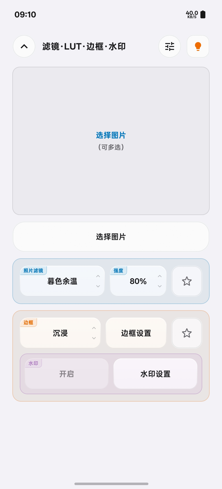
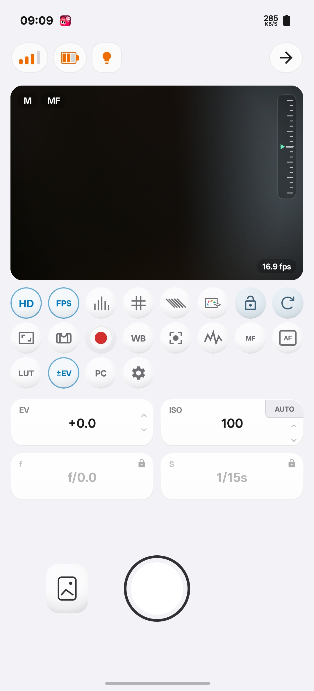

免费版
25 个文件 / 天
- 单个文件不超过 400 MB
- 遥控与监看每天 5 分钟
- 照片筛选、预览、滤镜与边框
- 效果图使用默认水印

01 / 选片与传输


速度与大文件能力取决于设备、连接及存储条件。
02 / 照片效果
选择滤镜或 LUT，搭配胶片颗粒；滤镜强度可调。
自定义水印需高级版。
适用于 JPG / JPEG。


03 / 连接方式
手机需支持 USB Host / OTG。
也可让相机接入手机热点。
04 / 监看与遥控

高清、全屏预览，构图线与水平仪辅助取景。
直方图与斑马纹，辅助判断明暗分布与高光。
点按对焦、调节曝光，遥控相机拍照与录像。
05 / 版本权益
价格与有效期以 App 内为准，实际能力受设备条件影响。
开始使用
Z传面向尼康相机。机型、固件、连接方式及拍摄模式会影响功能支持，建议先用免费版连接自己的设备试用。
下载 APK 后打开文件，按系统提示允许当前浏览器或文件管理器安装应用，再完成安装。